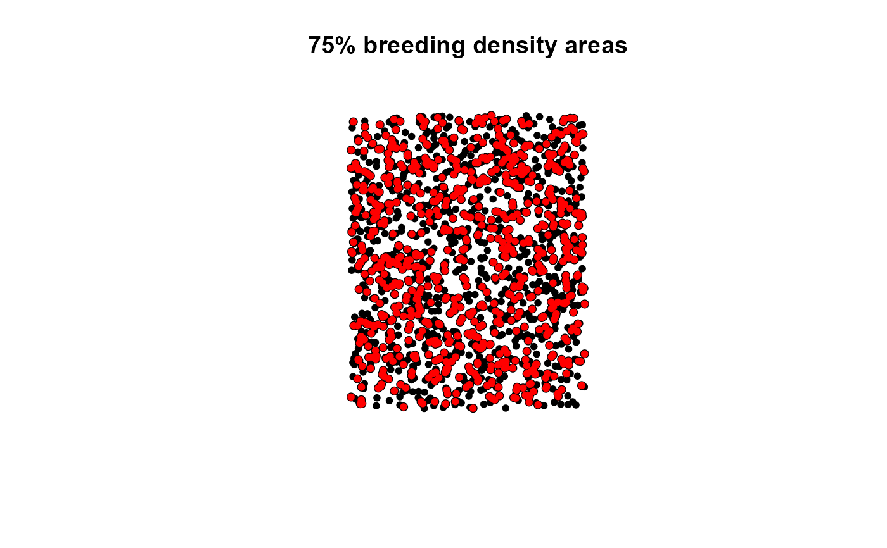

Calculates breeding density areas base on population counts and spatial point density.
breeding.density(x, pop, p = 0.75, bw = 6400, b = 8500, self = TRUE)
| x | sp SpatialPointsDataFrame object |
|---|---|
| pop | Population count/density column in x@data |
| p | Target percent of population |
| bw | Bandwidth distance for the kernel estimate (default 8500) |
| b | Buffer distance (default 8500) |
| self | (TRUE/FALSE) Should source observations be included in density (default TRUE) |
A list object with:
pop.pts sp point object with points identified within the specified p
pop.area sp polygon object of buffered points specified by parameter b
bandwidth Specified distance bandwidth used in identifying neighbor counts
buffer Specified buffer distance used in buffering points for pop.area
p Specified population percent
The breeding density areas model identifies the Nth-percent population exhibiting the highest spatial density and counts/frequency. It then buffers these points by a specified distance to produce breeding area polygons. If you would like to recreate the results in Doherty et al., (2010), then define bw = 6400m and b[if p < 0.75 b = 6400m, | p >= 0.75 b = 8500m]
Doherty, K.E., J.D. Tack, J.S. Evans, D.E. Naugle (2010) Mapping breeding densities of greater sage-grouse: A tool for range-wide conservation planning. Bureau of Land Management. Number L10PG00911
Jeffrey S. Evans <jeffrey_evans@tnc.org>
require(sp) n=1500 bb <- rbind(c(-1281299,-761876.5),c(1915337,2566433.5)) bb.mat <- cbind(c(bb[1,1], bb[1,2], bb[1,2], bb[1,1]), c(bb[2,1], bb[2,1], bb[2,2], bb[2,2])) bbp <- Polygon(bb.mat) s <- spsample(bbp, n, type='random') pop <- SpatialPointsDataFrame(s, data.frame(ID=1:length(s), counts=runif(length(s), 1,250))) bd75 <- breeding.density(pop, pop='counts', p=0.75, b=8500, bw=6400) plot(bd75$pop.area, main='75% breeding density areas')